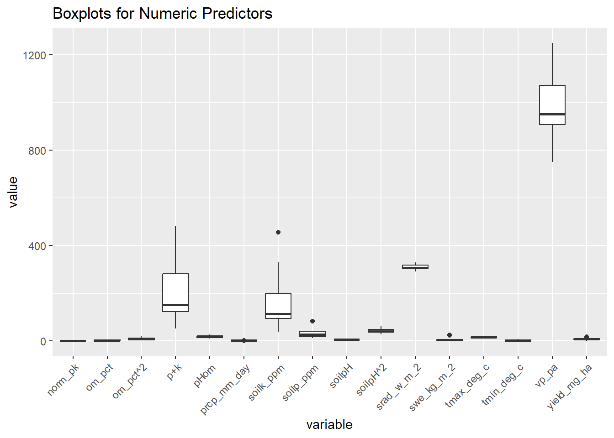
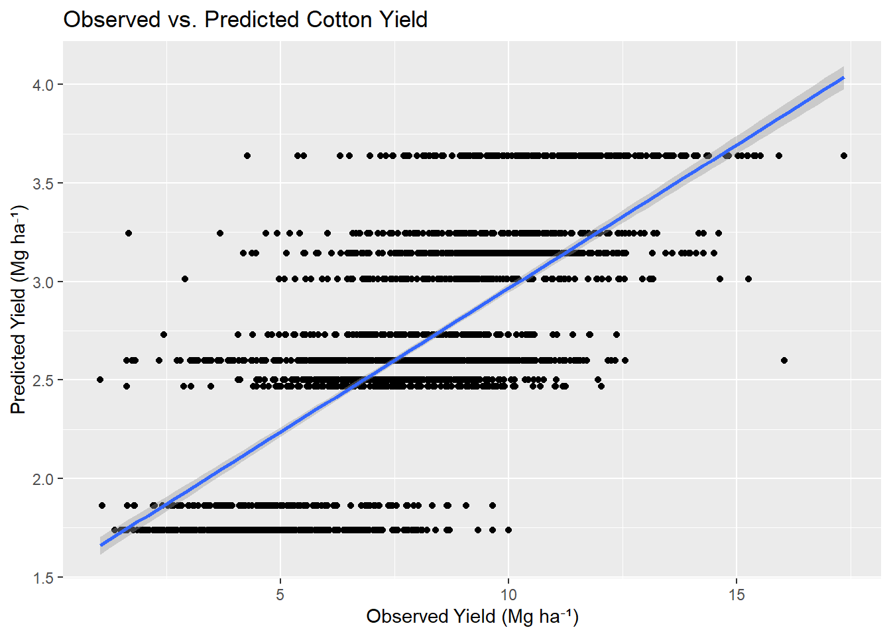
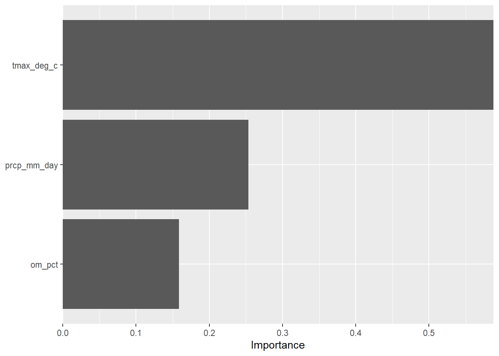
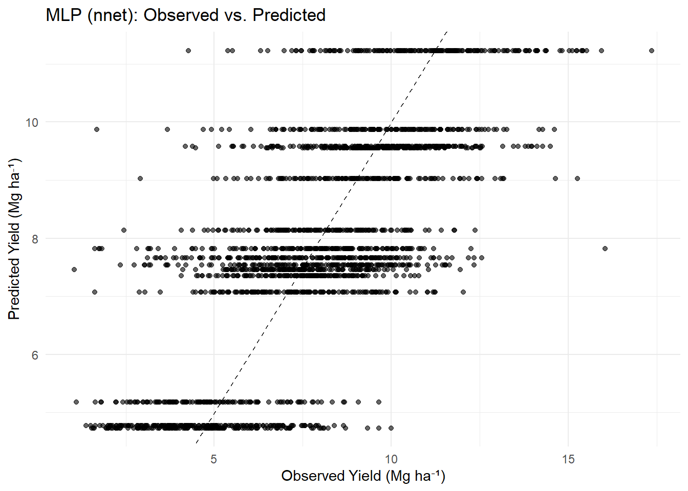

#Loading necessary libraries
# --- Data Import and Basic Handling ---
library(readr) # For reading CSV and delimited text files
library(janitor) # For cleaning column names, removing empty rows/columns
library(naniar) # Handling missing data
# --- Data Wrangling & Cleaning ---
library(dplyr) # Data manipulation (filter, mutate, group_by, etc.)
library(tidyr) # Data tidying (pivoting, reshaping)
library(lubridate) # Date/time manipulation
library(tidyverse) # Collection of packages for data science
# --- Visualization ---
library(ggplot2) # Core plotting
library(ggthemes) # Extra themes for ggplot2
library(ggpubr) # Publication-ready plots
library(cowplot) # Combining multiple ggplots
library(corrplot) # Correlation matrix visualization
library(GGally) # Pairwise plots (ggpairs)
library (PerformanceAnalytics)
library(plotly)
library(circlize)
# --- Machine Learning Framework ---
library(tidymodels) # for parsnip, recipes, tune, etc.
library(nnet)
library(keras)
library(hardhat) # for extract_parameter_set_dials()
library(dials) # for hidden_units(), penalty(), dropout(), epochs()
library(scales)
# --- Modeling Engines ---
library(xgboost) # XGBoost implementation
library(ranger) # Fast Random Forests (optional alternative for comparison)
# --- Feature Engineering ---
library(recipes) # Included in tidymodels, but useful to load for step-by-step prep
library(textrecipes) # If you're working with text data
library(caret)
# --- Model Tuning & Validation ---
library(finetune) # Advanced hyperparameter tuning strategies (racing, ANOVA, etc.)
library(tune) # For grid/random tuning workflows
library(rsample) # Data splitting (train/test, cross-validation)
# --- Metrics and Evaluation ---
library(yardstick) # Evaluation metrics (RMSE, R², MAE, etc.)
library(vip) # Variable importance plots
library(pROC) # ROC and AUC curves for classification (if needed)
# --- Parallel Processing ---
library(doParallel) # Enable parallel computation to speed up tuning/resampling
library(future)
# --- Utilities & Diagnostics ---
library(car) # Variance inflation factors, etc.
library (skimr) # For a quick skim/summary of the data
library(DataExplorer) # For EDAFinal_XGBoost_MLP-NNET_Group4_Ashbin-Comfort
#A.Load Libraries
#——————————————————————————————
2. Read and merge data (left join)
# Read weather data and compute yearly/site means
weather_mean = read_csv("../data/training/weather_data.csv") %>%
group_by(year, site) %>%
summarise(
dayl_s = mean(dayl_s, na.rm = TRUE),
prcp_mm_day = mean(prcp_mm_day, na.rm = TRUE),
srad_w_m_2 = mean(srad_w_m_2, na.rm = TRUE),
swe_kg_m_2 = mean(swe_kg_m_2, na.rm = TRUE),
tmax_deg_c = mean(tmax_deg_c, na.rm = TRUE),
tmin_deg_c = mean(tmin_deg_c, na.rm = TRUE),
vp_pa = mean(vp_pa, na.rm = TRUE),
.groups = "drop"
)
# Read trait data
trait = read_csv("../data/training/training_trait.csv") %>%
mutate(yield_mg_ha = yield_mg_ha *
((100 - grain_moisture) / (100 - 15.5))) %>%
select(-grain_moisture)
# Join trait with averaged weather
trait_weather = left_join(trait, weather_mean, by = c("year", "site"))
# Read soil data and clean site codes
# New soil variables ("pHom","pk","soilpH^2","om_pct^2","p+k","norm_pk") were created in Excel
soil = read_csv("../data/training/training_soil.csv") %>%
mutate(site = sub(paste0("_", year, "$"), "", site))
# Join trait-weather with soil data
tw_soil = left_join(trait_weather, soil, by = c("year", "site"))
# Read and clean meta data (drop empty Tmax/Tmin)
meta = read_csv("../data/training/training_meta.csv") %>%
select(year, site, previous_crop, longitude, latitude)
# Join meta into the combined dataset
tw_sm_meta <- left_join(tw_soil, meta, by = c("year", "site")) %>%
# Convert character columns to numeric where needed
mutate(
pHom = as.numeric(pHom),
`soilpH^2` = as.numeric(`soilpH^2`),
`om_pct^2` = as.numeric(`om_pct^2`)
)
# Remove all rows with any missing values
final_merged = tw_sm_meta %>%
drop_na()%>%
select(-year, - site, -replicate, -block, -dayl_s)
#summary(final_merged)
#glimpse(final_merged)# Feature engineering
merged_clean = final_merged %>%
mutate(
date_planted = mdy(date_planted),
date_harvested = mdy(date_harvested)
)%>% select(-date_harvested,
-date_planted,
-longitude,
-latitude,
-pk,
-previous_crop,
-hybrid)
merged_clean# A tibble: 7,392 × 16
yield_mg_ha prcp_mm_day srad_w_m_2 swe_kg_m_2 tmax_deg_c tmin_deg_c vp_pa
<dbl> <dbl> <dbl> <dbl> <dbl> <dbl> <dbl>
1 13.8 3.69 305. 6.10 15.4 3.96 1007.
2 9.62 3.69 305. 6.10 15.4 3.96 1007.
3 12.6 3.69 305. 6.10 15.4 3.96 1007.
4 10.2 3.69 305. 6.10 15.4 3.96 1007.
5 7.77 3.69 305. 6.10 15.4 3.96 1007.
6 11.8 3.69 305. 6.10 15.4 3.96 1007.
7 9.68 3.69 305. 6.10 15.4 3.96 1007.
8 12.1 3.69 305. 6.10 15.4 3.96 1007.
9 10.5 3.69 305. 6.10 15.4 3.96 1007.
10 8.68 3.69 305. 6.10 15.4 3.96 1007.
# ℹ 7,382 more rows
# ℹ 9 more variables: soilpH <dbl>, om_pct <dbl>, soilk_ppm <dbl>,
# soilp_ppm <dbl>, pHom <dbl>, `soilpH^2` <dbl>, `om_pct^2` <dbl>,
# `p+k` <dbl>, norm_pk <dbl># Write out the fully merged and cleaned CSV
write_csv(merged_clean, "../Shiny_APP/merged_factored.csv")
# Ensure numeric columns are numeric
num_cols = c(
"prcp_mm_day","srad_w_m_2","swe_kg_m_2",
"tmax_deg_c","tmin_deg_c","vp_pa",
"soilpH","om_pct","soilk_ppm","soilp_ppm",
"pHom","soilpH^2","om_pct^2","p+k","norm_pk", "yield_mg_ha"
)
merged_factored = merged_clean %>%
mutate(across(all_of(num_cols), as.numeric))
# Outlier inspection: boxplots for numeric predictors
num_vars = merged_factored %>% select(all_of(num_cols))
boxplot_data = num_vars %>%
pivot_longer(cols = everything(), names_to = "variable", values_to = "value")
ggplot(boxplot_data, aes(x = variable, y = value)) +
geom_boxplot() +
theme(axis.text.x = element_text(angle = 45, hjust = 1)) +
ggtitle("Boxplots for Numeric Predictors")
# Correlation matrix among continuous predictors
corr_mat = cor(num_vars, use = "pairwise.complete.obs")
corr_mat prcp_mm_day srad_w_m_2 swe_kg_m_2 tmax_deg_c tmin_deg_c
prcp_mm_day 1.00000000 -0.57098811 0.145452125 -0.1676101 0.51861235
srad_w_m_2 -0.57098811 1.00000000 -0.435483834 0.7933415 0.21450538
swe_kg_m_2 0.14545213 -0.43548383 1.000000000 -0.6351417 -0.32002156
tmax_deg_c -0.16761009 0.79334145 -0.635141665 1.0000000 0.69795192
tmin_deg_c 0.51861235 0.21450538 -0.320021556 0.6979519 1.00000000
vp_pa 0.71944786 -0.02568104 -0.163896221 0.4886540 0.95950171
soilpH -0.03659962 -0.15721446 0.652844919 -0.2359710 -0.01274909
om_pct 0.32329921 -0.69483751 0.051896728 -0.5864938 -0.33042779
soilk_ppm -0.80941463 0.69426623 -0.517877606 0.3617566 -0.36601658
soilp_ppm 0.02073023 -0.18277851 -0.316330240 -0.2337265 -0.26046280
pHom 0.28440374 -0.73501717 0.257364975 -0.6700517 -0.35905386
soilpH^2 -0.02108084 -0.17300353 0.692433085 -0.2593787 -0.02393973
om_pct^2 0.30020014 -0.66198611 0.007971383 -0.5296897 -0.30034743
p+k -0.77387026 0.63936375 -0.543905770 0.3126569 -0.38987129
norm_pk -0.58424557 0.64588797 -0.428425379 0.5226914 -0.02211350
yield_mg_ha 0.30172032 -0.35993946 0.110233463 -0.3936438 -0.22750095
vp_pa soilpH om_pct soilk_ppm soilp_ppm
prcp_mm_day 0.71944786 -0.03659962 0.32329921 -0.8094146 0.02073023
srad_w_m_2 -0.02568104 -0.15721446 -0.69483751 0.6942662 -0.18277851
swe_kg_m_2 -0.16389622 0.65284492 0.05189673 -0.5178776 -0.31633024
tmax_deg_c 0.48865396 -0.23597097 -0.58649379 0.3617566 -0.23372651
tmin_deg_c 0.95950171 -0.01274909 -0.33042779 -0.3660166 -0.26046280
vp_pa 1.00000000 0.04895264 -0.17980114 -0.5709485 -0.21756974
soilpH 0.04895264 1.00000000 -0.20630561 -0.3132122 -0.16673241
om_pct -0.17980114 -0.20630561 1.00000000 -0.3341324 0.19433173
soilk_ppm -0.57094847 -0.31321224 -0.33413235 1.0000000 0.19975197
soilp_ppm -0.21756974 -0.16673241 0.19433173 0.1997520 1.00000000
pHom -0.18983093 0.12531761 0.94292456 -0.4164000 0.15407481
soilpH^2 0.04340582 0.99767714 -0.21450644 -0.3340424 -0.17704190
om_pct^2 -0.15736098 -0.21497318 0.98950969 -0.3061236 0.19365311
p+k -0.58023361 -0.32531636 -0.29197033 0.9894334 0.33970736
norm_pk -0.21476648 -0.37371324 -0.33641838 0.6425762 -0.47398622
yield_mg_ha -0.11091437 -0.27115273 0.42298201 -0.1935875 0.17144733
pHom soilpH^2 om_pct^2 p+k norm_pk
prcp_mm_day 0.2844037 -0.02108084 0.300200140 -0.7738703 -0.5842456
srad_w_m_2 -0.7350172 -0.17300353 -0.661986109 0.6393637 0.6458880
swe_kg_m_2 0.2573650 0.69243308 0.007971383 -0.5439058 -0.4284254
tmax_deg_c -0.6700517 -0.25937868 -0.529689716 0.3126569 0.5226914
tmin_deg_c -0.3590539 -0.02393973 -0.300347434 -0.3898713 -0.0221135
vp_pa -0.1898309 0.04340582 -0.157360976 -0.5802336 -0.2147665
soilpH 0.1253176 0.99767714 -0.214973175 -0.3253164 -0.3737132
om_pct 0.9429246 -0.21450644 0.989509689 -0.2919703 -0.3364184
soilk_ppm -0.4164000 -0.33404237 -0.306123625 0.9894334 0.6425762
soilp_ppm 0.1540748 -0.17704190 0.193653107 0.3397074 -0.4739862
pHom 1.0000000 0.11402646 0.930949067 -0.3768939 -0.4472644
soilpH^2 0.1140265 1.00000000 -0.225407574 -0.3468362 -0.3949227
om_pct^2 0.9309491 -0.22540757 1.000000000 -0.2651858 -0.3264184
p+k -0.3768939 -0.34683620 -0.265185842 1.0000000 0.5466577
norm_pk -0.4472644 -0.39492268 -0.326418379 0.5466577 1.0000000
yield_mg_ha 0.3250434 -0.25053107 0.420885871 -0.1604509 -0.3265441
yield_mg_ha
prcp_mm_day 0.3017203
srad_w_m_2 -0.3599395
swe_kg_m_2 0.1102335
tmax_deg_c -0.3936438
tmin_deg_c -0.2275009
vp_pa -0.1109144
soilpH -0.2711527
om_pct 0.4229820
soilk_ppm -0.1935875
soilp_ppm 0.1714473
pHom 0.3250434
soilpH^2 -0.2505311
om_pct^2 0.4208859
p+k -0.1604509
norm_pk -0.3265441
yield_mg_ha 1.0000000#correlation matrix
corrplot(
corr_mat,
method = "color", # "circle", "number", "shade", etc.
type = "upper", # show only upper triangle
order = "hclust", # cluster variables
tl.col = "black", # label color
tl.srt = 45, # label rotation
addCoef.col = "white", # add correlation coefficients
diag = FALSE # hide diagonal
)
# combined scatter + histogram + corr matrix view
chart.Correlation(
num_vars,
histogram = TRUE,
pch = 19,
method = "pearson" # or "spearman"
)
#—————————————————————————————— #——————————————————————————————
Model-1: XGBoost ML workflow
#——————————————————————————————
1. Pre-processing
# Set seed for reproducibility
set.seed(2053)
# Create 70/30 train-test split, stratified by yield
ml_split = initial_split(
data = merged_factored,
prop = 0.7,
strata = yield_mg_ha # Stratify by target variable
)
# Review split
ml_split<Training/Testing/Total>
<5172/2220/7392>a. Data split
train_data = training(ml_split) # 70% of data
train_data# A tibble: 5,172 × 16
yield_mg_ha prcp_mm_day srad_w_m_2 swe_kg_m_2 tmax_deg_c tmin_deg_c vp_pa
<dbl> <dbl> <dbl> <dbl> <dbl> <dbl> <dbl>
1 2.56 3.69 305. 6.10 15.4 3.96 1007.
2 4.01 3.69 305. 6.10 15.4 3.96 1007.
3 5.95 3.69 305. 6.10 15.4 3.96 1007.
4 2.82 3.13 305. 5.66 15.0 3.57 982.
5 2.96 3.13 305. 5.66 15.0 3.57 982.
6 6.09 3.13 305. 5.66 15.0 3.57 982.
7 4.99 3.13 305. 5.66 15.0 3.57 982.
8 2.37 3.13 305. 5.66 15.0 3.57 982.
9 5.27 3.13 305. 5.66 15.0 3.57 982.
10 5.75 3.13 305. 5.66 15.0 3.57 982.
# ℹ 5,162 more rows
# ℹ 9 more variables: soilpH <dbl>, om_pct <dbl>, soilk_ppm <dbl>,
# soilp_ppm <dbl>, pHom <dbl>, `soilpH^2` <dbl>, `om_pct^2` <dbl>,
# `p+k` <dbl>, norm_pk <dbl>write_csv(train_data, "../Shiny_APP/train_data.csv")test_data = testing(ml_split) # 30% of data
test_data # A tibble: 2,220 × 16
yield_mg_ha prcp_mm_day srad_w_m_2 swe_kg_m_2 tmax_deg_c tmin_deg_c vp_pa
<dbl> <dbl> <dbl> <dbl> <dbl> <dbl> <dbl>
1 9.62 3.69 305. 6.10 15.4 3.96 1007.
2 9.68 3.69 305. 6.10 15.4 3.96 1007.
3 11.3 3.69 305. 6.10 15.4 3.96 1007.
4 10.2 3.69 305. 6.10 15.4 3.96 1007.
5 8.13 3.69 305. 6.10 15.4 3.96 1007.
6 14.1 3.69 305. 6.10 15.4 3.96 1007.
7 9.90 3.69 305. 6.10 15.4 3.96 1007.
8 9.52 3.69 305. 6.10 15.4 3.96 1007.
9 12.0 3.69 305. 6.10 15.4 3.96 1007.
10 12.9 3.69 305. 6.10 15.4 3.96 1007.
# ℹ 2,210 more rows
# ℹ 9 more variables: soilpH <dbl>, om_pct <dbl>, soilk_ppm <dbl>,
# soilp_ppm <dbl>, pHom <dbl>, `soilpH^2` <dbl>, `om_pct^2` <dbl>,
# `p+k` <dbl>, norm_pk <dbl>write_csv(test_data, "../Shiny_APP/test_data.csv")b. Distribution of target variable
ggplot() +
geom_density(
data = train_data,
aes(x = yield_mg_ha, colour = "Train")
) +
geom_density(
data = test_data,
aes(x = yield_mg_ha, colour = "Test")
) +
scale_colour_manual(
name = "Dataset",
values = c("Train" = "red", "Test" = "blue")
) +
labs(
x = "Yield (Mg/ha)",
y = "Density"
) +
theme_minimal()
c. Data processing with recipe
library(recipes)
library(embed) # for step_lencode_glm()
library(parsnip) # for boost_tree()
library(workflows) # for workflow()
library(rsample) # for vfold_cv()
ml_recipe = recipe(yield_mg_ha ~ ., data = train_data) %>%
# d) drop any zero‐variance predictors (e.g. if a level never appeared in a resample)
step_zv(all_predictors()) %>%
# Center & scale all remaining predictors
step_normalize(all_numeric_predictors()) #%>%
# Apply PCA to those normalized predictors
#step_pca(all_predictors(), threshold = 0.95) #keep PCs explaining 95% of variance
ml_recipe── Recipe ──────────────────────────────────────────────────────────────────────── Inputs Number of variables by roleoutcome: 1
predictor: 15── Operations • Zero variance filter on: all_predictors()• Centering and scaling for: all_numeric_predictors()# Parallel processing
registerDoParallel(cores = parallel::detectCores() - 1)
# Prep the recipe to estimate any required statistics
ml_prep = ml_recipe %>%
prep(verbose = TRUE)oper 1 step zv [training]
oper 2 step normalize [training]
The retained training set is ~ 0.63 Mb in memory.# Stop parallel processing
stopImplicitCluster()
# Play a sound when done
beepr::beep()
# Examine preprocessing steps
ml_prep── Recipe ──────────────────────────────────────────────────────────────────────── Inputs Number of variables by roleoutcome: 1
predictor: 15── Training information Training data contained 5172 data points and no incomplete rows.── Operations • Zero variance filter removed: <none> | Trained• Centering and scaling for: prcp_mm_day srad_w_m_2, ... | Trained2. Training
a. Model specification
library(tidymodels)
xgb_spec = boost_tree(
trees = tune(), # Number of boosting iterations
tree_depth = tune(), # Maximum depth of each tree
min_n = tune(), # Minimum number of samples required to split a node
learn_rate = tune(), # Step-size shrinkage (learning rate)
loss_reduction = tune(), # Minimum loss reduction required to make a split
sample_size = tune(), # Subsample ratio of the training instances
mtry = tune() # Number of predictors sampled for each split
) %>%
set_engine("xgboost",
) %>%
set_mode("regression")
# Print the specification
xgb_specBoosted Tree Model Specification (regression)
Main Arguments:
mtry = tune()
trees = tune()
min_n = tune()
tree_depth = tune()
learn_rate = tune()
loss_reduction = tune()
sample_size = tune()
Computational engine: xgboost b. Cross-validation setup
set.seed(2053)
resampling_foldcv = vfold_cv(train_data,
v = 10) #10-fold cross-validation
resampling_foldcv# 10-fold cross-validation
# A tibble: 10 × 2
splits id
<list> <chr>
1 <split [4654/518]> Fold01
2 <split [4654/518]> Fold02
3 <split [4655/517]> Fold03
4 <split [4655/517]> Fold04
5 <split [4655/517]> Fold05
6 <split [4655/517]> Fold06
7 <split [4655/517]> Fold07
8 <split [4655/517]> Fold08
9 <split [4655/517]> Fold09
10 <split [4655/517]> Fold10resampling_foldcv$splits[[1]]<Analysis/Assess/Total>
<4654/518/5172>c. Hyperparameter grid with Latin Hypercube Sampling
library(dials)
# Assuming 'train_data' is your preprocessed training dataset
xgb_grid = grid_latin_hypercube(
trees(),
tree_depth(),
min_n(),
learn_rate(),
loss_reduction(),
sample_size = sample_prop(),
finalize(mtry(), train_data),
size = 30 # Adjust the size based on computational resources
)Warning: `grid_latin_hypercube()` was deprecated in dials 1.3.0.
ℹ Please use `grid_space_filling()` instead.xgb_grid# A tibble: 30 × 7
trees tree_depth min_n learn_rate loss_reduction sample_size mtry
<int> <int> <int> <dbl> <dbl> <dbl> <int>
1 1527 11 5 0.0000000276 1.95e- 9 0.288 6
2 1696 5 16 0.0000347 2.37e- 7 0.977 11
3 1369 12 30 0.00000000153 2.44e+ 1 0.535 13
4 64 10 8 0.00000000188 3.20e-10 0.902 3
5 298 11 36 0.000000425 2.31e+ 0 0.349 1
6 1453 10 26 0.000238 1.07e- 8 0.404 2
7 242 3 2 0.000584 4.62e- 1 0.957 11
8 829 14 38 0.0394 4.64e- 3 0.677 14
9 1958 2 24 0.00198 2.95e- 2 0.325 15
10 1564 13 21 0.00000000680 3.13e- 1 0.167 16
# ℹ 20 more rowsggplot(data = xgb_grid,
aes(x = tree_depth,
y = min_n)) +
geom_point(aes(color = factor(learn_rate),
size = trees),
alpha = .5,
show.legend = FALSE)
3. Model Tuning
#for reproducibility
set.seed(2053)
# Parallel processing
registerDoParallel(cores = parallel::detectCores() - 1)
# Perform grid search tuning
xgb_res = tune_grid(
object = xgb_spec,
preprocessor = ml_recipe, #providing recipe here
resamples = resampling_foldcv, # providing re-sampling CV
grid = xgb_grid, # providing grid specs
control = control_race(save_pred = TRUE)
)Warning: ! tune detected a parallel backend registered with foreach but no backend
registered with future.
ℹ Support for parallel processing with foreach was soft-deprecated in tune
1.2.1.
ℹ See ?parallelism (`?tune::parallelism()`) to learn more.# Stop parallel processing
stopImplicitCluster()
# Play a sound when done
beepr::beep()
# Access metrics
xgb_res$.metrics[[2]]# A tibble: 60 × 11
mtry trees min_n tree_depth learn_rate loss_reduction sample_size .metric
<int> <int> <int> <int> <dbl> <dbl> <dbl> <chr>
1 4 555 26 1 0.000000210 0.000000397 0.148 rmse
2 4 555 26 1 0.000000210 0.000000397 0.148 rsq
3 10 350 23 2 0.000147 0.00613 0.221 rmse
4 10 350 23 2 0.000147 0.00613 0.221 rsq
5 15 1958 24 2 0.00198 0.0295 0.325 rmse
6 15 1958 24 2 0.00198 0.0295 0.325 rsq
7 11 242 2 3 0.000584 0.462 0.957 rmse
8 11 242 2 3 0.000584 0.462 0.957 rsq
9 13 916 15 3 0.00000206 0.000858 0.439 rmse
10 13 916 15 3 0.00000206 0.000858 0.439 rsq
# ℹ 50 more rows
# ℹ 3 more variables: .estimator <chr>, .estimate <dbl>, .config <chr>4. Select Best Models
# Based on lowest RMSE
best_rmse = xgb_res %>%
select_best(metric = "rmse")%>%
mutate(source = "best_rmse")
best_rmse# A tibble: 1 × 9
mtry trees min_n tree_depth learn_rate loss_reduction sample_size .config
<int> <int> <int> <int> <dbl> <dbl> <dbl> <chr>
1 10 1057 20 4 0.0832 6.13 0.716 Preprocess…
# ℹ 1 more variable: source <chr># Based on lowers RMSE within 1% loss
best_rmse_pct_loss = xgb_res %>%
select_by_pct_loss("min_n",
metric = "rmse",
limit = 1
)%>%
mutate(source = "best_rmse_pct_loss")
best_rmse_pct_loss# A tibble: 1 × 9
mtry trees min_n tree_depth learn_rate loss_reduction sample_size .config
<int> <int> <int> <int> <dbl> <dbl> <dbl> <chr>
1 15 1958 24 2 0.00198 0.0295 0.325 Preprocess…
# ℹ 1 more variable: source <chr># Based on lowest RMSE within 1 se
best_rmse_one_std_err = xgb_res %>%
select_by_one_std_err(metric = "rmse",
eval_time = 100,
trees
)%>%
mutate(source = "best_rmse_one_std_err")Warning in select_by_one_std_err(., metric = "rmse", eval_time = 100, trees):
`eval_time` is only used for models with mode "censored regression".best_rmse_one_std_err# A tibble: 1 × 9
mtry trees min_n tree_depth learn_rate loss_reduction sample_size .config
<int> <int> <int> <int> <dbl> <dbl> <dbl> <chr>
1 14 829 38 14 0.0394 0.00464 0.677 Preprocess…
# ℹ 1 more variable: source <chr># Based on greatest R2
best_r2 = xgb_res %>%
select_best(metric = "rsq")%>%
mutate(source = "best_r2")
best_r2# A tibble: 1 × 9
mtry trees min_n tree_depth learn_rate loss_reduction sample_size .config
<int> <int> <int> <int> <dbl> <dbl> <dbl> <chr>
1 2 1453 26 10 0.000238 0.0000000107 0.404 Preprocess…
# ℹ 1 more variable: source <chr># Based on lowers R2 within 1% loss
best_r2_pct_loss = xgb_res %>%
select_by_pct_loss("min_n",
metric = "rsq",
limit = 1
) %>%
mutate(source = "best_r2_pct_loss")
best_r2_pct_loss# A tibble: 1 × 9
mtry trees min_n tree_depth learn_rate loss_reduction sample_size .config
<int> <int> <int> <int> <dbl> <dbl> <dbl> <chr>
1 15 1958 24 2 0.00198 0.0295 0.325 Preprocess…
# ℹ 1 more variable: source <chr># Based on lowest R2 within 1 se
best_r2_one_std_error = xgb_res %>%
select_by_one_std_err(metric = "rsq",
eval_time = 100,
trees
) %>%
mutate(source = "best_r2_one_std_error")Warning in select_by_one_std_err(., metric = "rsq", eval_time = 100, trees):
`eval_time` is only used for models with mode "censored regression".best_r2_one_std_error# A tibble: 1 × 9
mtry trees min_n tree_depth learn_rate loss_reduction sample_size .config
<int> <int> <int> <int> <dbl> <dbl> <dbl> <chr>
1 6 94 11 8 0.000000120 0.0000000568 0.606 Preproces…
# ℹ 1 more variable: source <chr>Compare and Finalize Model
best_rmse %>%
bind_rows(best_rmse_pct_loss,
best_rmse_one_std_err,
best_r2,
best_r2_pct_loss,
best_r2_one_std_error)# A tibble: 6 × 9
mtry trees min_n tree_depth learn_rate loss_reduction sample_size .config
<int> <int> <int> <int> <dbl> <dbl> <dbl> <chr>
1 10 1057 20 4 0.0832 6.13 0.716 Preproces…
2 15 1958 24 2 0.00198 0.0295 0.325 Preproces…
3 14 829 38 14 0.0394 0.00464 0.677 Preproces…
4 2 1453 26 10 0.000238 0.0000000107 0.404 Preproces…
5 15 1958 24 2 0.00198 0.0295 0.325 Preproces…
6 6 94 11 8 0.000000120 0.0000000568 0.606 Preproces…
# ℹ 1 more variable: source <chr>5. Final Specification
final_spec = boost_tree(
trees = best_r2$trees, # Number of boosting rounds (trees)
tree_depth = best_r2$tree_depth, # Maximum depth of each tree
min_n = best_r2$min_n, # Minimum number of samples to split a node
learn_rate = best_r2$learn_rate # Learning rate (step size shrinkage)
) %>%
set_engine("xgboost") %>%
set_mode("regression")
final_specBoosted Tree Model Specification (regression)
Main Arguments:
trees = best_r2$trees
min_n = best_r2$min_n
tree_depth = best_r2$tree_depth
learn_rate = best_r2$learn_rate
Computational engine: xgboost 6. Final Fit and Predictions
Validation
set.seed(2053)
final_fit = last_fit(final_spec,
ml_recipe,
split = ml_split)
final_fit %>%
collect_predictions()# A tibble: 2,220 × 5
.pred id .row yield_mg_ha .config
<dbl> <chr> <int> <dbl> <chr>
1 3.64 train/test split 2 9.62 Preprocessor1_Model1
2 3.64 train/test split 7 9.68 Preprocessor1_Model1
3 3.64 train/test split 13 11.3 Preprocessor1_Model1
4 3.64 train/test split 23 10.2 Preprocessor1_Model1
5 3.64 train/test split 26 8.13 Preprocessor1_Model1
6 3.64 train/test split 27 14.1 Preprocessor1_Model1
7 3.64 train/test split 29 9.90 Preprocessor1_Model1
8 3.64 train/test split 30 9.52 Preprocessor1_Model1
9 3.64 train/test split 31 12.0 Preprocessor1_Model1
10 3.64 train/test split 32 12.9 Preprocessor1_Model1
# ℹ 2,210 more rows7. Evaluate on Test Set
final_fit %>%
collect_metrics()# A tibble: 2 × 4
.metric .estimator .estimate .config
<chr> <chr> <dbl> <chr>
1 rmse standard 5.75 Preprocessor1_Model1
2 rsq standard 0.502 Preprocessor1_Model18. Evaluate on Training Set
final_spec %>%
fit(yield_mg_ha ~ .,
data = bake(ml_prep,
train_data)) %>%
augment(new_data = bake(ml_prep,
train_data)) %>%
rmse(yield_mg_ha, .pred) %>%
bind_rows(
# R2
final_spec %>%
fit(yield_mg_ha ~ .,
data = bake(ml_prep,
train_data)) %>%
augment(new_data = bake(ml_prep,
train_data)) %>%
rsq(yield_mg_ha, .pred))# A tibble: 2 × 3
.metric .estimator .estimate
<chr> <chr> <dbl>
1 rmse standard 5.75
2 rsq standard 0.5069. Predicted vs Observed Plot
preds_in_range =
final_fit %>%
collect_predictions() %>%
filter(
between(yield_mg_ha, 0, 20),
between(.pred, 0, 20),
#!is.na(.pred)
)
ggplot(preds_in_range, aes(x = yield_mg_ha, y = .pred)) +
geom_point() +
geom_smooth(method = "lm", formula = y ~ x) +
# now limits aren’t needed, since everything is already in [20,40]:
labs(
x = "Observed Yield (Mg ha⁻¹)",
y = "Predicted Yield (Mg ha⁻¹)",
title = "Observed vs. Predicted Cotton Yield"
)
10. Variable Importance
final_spec %>%
fit(yield_mg_ha ~ .,
data = bake(ml_prep, train_data)) %>%
vi() %>%
mutate(
Variable = fct_reorder(Variable,
Importance)
) %>%
ggplot(aes(x = Importance,
y = Variable)) +
geom_col() +
scale_x_continuous(expand = c(0, 0)) +
labs(y = NULL)
# After you’ve picked best_r2:
final_wf = workflow() %>%
add_recipe(ml_recipe) %>%
add_model(final_spec) %>%
finalize_workflow(best_r2)
# Fit on train data
fitted_full = fit(final_wf, data = train_data)
# Save that for production
saveRDS(fitted_full, "../Shiny_APP/xgb_full_data_workflow.rds")#—————————————————————————————— #——————————————————————————————
Model-2: Multilayer Perceptron (MLP)
#——————————————————————————————
Here we are using the same data set that we used above.
##1. Loading earler prepared data
## 1. Load and prepare data for MLP
mlp_data = merged_factored
glimpse(mlp_data)Rows: 7,392
Columns: 16
$ yield_mg_ha <dbl> 13.759282, 9.623457, 12.612381, 10.188858, 7.768113, 11.77…
$ prcp_mm_day <dbl> 3.689479, 3.689479, 3.689479, 3.689479, 3.689479, 3.689479…
$ srad_w_m_2 <dbl> 304.7765, 304.7765, 304.7765, 304.7765, 304.7765, 304.7765…
$ swe_kg_m_2 <dbl> 6.102082, 6.102082, 6.102082, 6.102082, 6.102082, 6.102082…
$ tmax_deg_c <dbl> 15.35592, 15.35592, 15.35592, 15.35592, 15.35592, 15.35592…
$ tmin_deg_c <dbl> 3.961507, 3.961507, 3.961507, 3.961507, 3.961507, 3.961507…
$ vp_pa <dbl> 1007.474, 1007.474, 1007.474, 1007.474, 1007.474, 1007.474…
$ soilpH <dbl> 5.3, 5.3, 5.3, 5.3, 5.3, 5.3, 5.3, 5.3, 5.3, 5.3, 5.3, 5.3…
$ om_pct <dbl> 3.2, 3.2, 3.2, 3.2, 3.2, 3.2, 3.2, 3.2, 3.2, 3.2, 3.2, 3.2…
$ soilk_ppm <dbl> 118, 118, 118, 118, 118, 118, 118, 118, 118, 118, 118, 118…
$ soilp_ppm <dbl> 34, 34, 34, 34, 34, 34, 34, 34, 34, 34, 34, 34, 34, 34, 34…
$ pHom <dbl> 16.96, 16.96, 16.96, 16.96, 16.96, 16.96, 16.96, 16.96, 16…
$ `soilpH^2` <dbl> 28.09, 28.09, 28.09, 28.09, 28.09, 28.09, 28.09, 28.09, 28…
$ `om_pct^2` <dbl> 10.24, 10.24, 10.24, 10.24, 10.24, 10.24, 10.24, 10.24, 10…
$ `p+k` <dbl> 152, 152, 152, 152, 152, 152, 152, 152, 152, 152, 152, 152…
$ norm_pk <dbl> 0.5526316, 0.5526316, 0.5526316, 0.5526316, 0.5526316, 0.5…2. Data Split
#70/30 train/test split (stratified on yield)
set.seed(2053)
mlp_split = initial_split(mlp_data,
prop = 0.7,
strata = yield_mg_ha)
train_data_mlp = training(mlp_split)
test_data_mlp = testing(mlp_split)
write_csv(train_data_mlp, "../Shiny_APP/train_data_mlp.csv")
write_csv(test_data_mlp, "../Shiny_APP/test_data_mlp.csv")# Check target distribution in train and test
train_data_mlp %>%
summarise(mean = mean(yield_mg_ha),
sd = sd(yield_mg_ha))# A tibble: 1 × 2
mean sd
<dbl> <dbl>
1 7.94 2.67test_data_mlp %>%
summarise(mean = mean(yield_mg_ha),
sd = sd(yield_mg_ha))# A tibble: 1 × 2
mean sd
<dbl> <dbl>
1 7.92 2.663. Recipe for the MLP
- dummy-code categorical predictors
- normalize numeric predictors
# Build a recipe for the MLP
mlp_recipe = recipe(yield_mg_ha ~ .,
data = train_data_mlp) %>%
step_zv(all_predictors()) %>%
step_normalize(all_numeric_predictors())mlp_recipe %>%
prep() %>%
juice() %>%
select(1:5)# A tibble: 5,172 × 5
prcp_mm_day srad_w_m_2 swe_kg_m_2 tmax_deg_c tmin_deg_c
<dbl> <dbl> <dbl> <dbl> <dbl>
1 1.14 -0.528 -0.0431 -0.336 -0.0343
2 1.14 -0.528 -0.0431 -0.336 -0.0343
3 1.14 -0.528 -0.0431 -0.336 -0.0343
4 0.360 -0.463 -0.107 -0.492 -0.259
5 0.360 -0.463 -0.107 -0.492 -0.259
6 0.360 -0.463 -0.107 -0.492 -0.259
7 0.360 -0.463 -0.107 -0.492 -0.259
8 0.360 -0.463 -0.107 -0.492 -0.259
9 0.360 -0.463 -0.107 -0.492 -0.259
10 0.360 -0.463 -0.107 -0.492 -0.259
# ℹ 5,162 more rows4. MLP model and hyperparameters
# 4. Specify the MLP model with tunable hyperparameters
mlp_spec_nnet = mlp(
hidden_units = tune(), # width of hidden layer
penalty = tune() # L2 weight decay ("decay" in nnet)
) %>%
set_engine(
"nnet",
trace = FALSE,
MaxNWts = 1000 # allow plenty of weights
) %>%
set_mode("regression")5. MLP workflow
#Creating MLP workflow
mlp_wf_nnet = workflow() %>%
add_recipe(mlp_recipe) %>%
add_model(mlp_spec_nnet)6. Cross validation setup (10-fold)
set.seed(2053)
cv_folds_mlp = vfold_cv(train_data_mlp,
v =5,
strata = yield_mg_ha)7. Hyperparameter grid
mlp_params_nnet = hardhat::extract_parameter_set_dials(mlp_spec_nnet) %>%
update(
hidden_units = hidden_units(range = c(1, 20)),
penalty = penalty(range = c(0, 1))
)
mlp_grid_nnet = grid_space_filling(
x = mlp_params_nnet,
size =30,
method = "maximin"
)8. Hyperparameters tuning in parallel
# turn off any foreach clusters
doParallel::stopImplicitCluster()
# register a sequential backend
foreach::registerDoSEQ()
set.seed(2053)
mlp_tune_nnet = tune_grid(
mlp_wf_nnet,
resamples = cv_folds_mlp,
grid = mlp_grid_nnet,
metrics = metric_set(rmse, rsq),
control = control_grid(save_pred = TRUE)
)
beepr::beep()#
metrics_nnet = mlp_tune_nnet %>%
collect_metrics() %>%
filter(.metric %in% c("rmse", "rsq")) %>%
select(-.estimator) %>%
pivot_wider(names_from = .metric, values_from = mean)
# Pick the best by lowest rmse then highest rsq
best_nnet = metrics_nnet %>%
arrange(rmse, desc(rsq)) %>%
slice_head(n = 1)
best_params_nnet = best_nnet %>%
select(hidden_units, penalty)
# 10. Finalize workflow & last_fit
final_wf_nnet = finalize_workflow(mlp_wf_nnet, best_params_nnet)
# Save that for production
#saveRDS(final_wf_nnet, "../Shiny_APP/mlp_full_data_workflow.rds")set.seed(2053)
final_res_nnet = last_fit(final_wf_nnet, split = mlp_split)# Test‐set performance
final_res_nnet %>% collect_metrics()# A tibble: 2 × 4
.metric .estimator .estimate .config
<chr> <chr> <dbl> <chr>
1 rmse standard 1.88 Preprocessor1_Model1
2 rsq standard 0.500 Preprocessor1_Model1# Test‐set predictions
preds_nnet = final_res_nnet %>% collect_predictions()# 11. Plot Observed vs. Predicted
ggplot(preds_nnet, aes(x = yield_mg_ha, y = .pred)) +
geom_point(alpha = 0.6) +
geom_abline(slope = 1, intercept = 0, linetype = "dashed") +
labs(
x = "Observed Yield (Mg ha⁻¹)",
y = "Predicted Yield (Mg ha⁻¹)",
title = "MLP (nnet): Observed vs. Predicted"
) +
theme_minimal()
# 13. (Optional) Inspect training-set performance
# ───────────────────────────────────────────────────────────────────────────────
# 12. (Optional) Check training‐set performance
train_fit_nnet = fit(final_wf_nnet, data = training(mlp_split))
train_preds_nnet = predict(train_fit_nnet, new_data = training(mlp_split)) %>%
bind_cols(training(mlp_split))
train_metrics_nnet = bind_rows(
train_preds_nnet %>% rmse(truth = yield_mg_ha, estimate = .pred),
train_preds_nnet %>% rsq (truth = yield_mg_ha, estimate = .pred)
)
train_metrics_nnet# A tibble: 2 × 3
.metric .estimator .estimate
<chr> <chr> <dbl>
1 rmse standard 1.88
2 rsq standard 0.507#—————————————————————————————— #—————————————————————————————— # Prediction on Test Data #——————————————————————————————
# Read weather data and compute yearly/site means
weather_test = read_csv("../data/testing/weather_2024.csv")%>%
distinct(year, site, .keep_all = TRUE)
# Read trait data
trait_test = read_csv("../data/testing/testing_submission.csv")
# Join trait with averaged weather
trait_weather_test = left_join(trait_test, weather_test, by = c("year", "site"))
# New soil variables ("pHom","pk","soilpH^2","om_pct^2","p+k","norm_pk") were created in Excel
soil_test = read_csv("../data/testing/testing_soil.csv")%>%
distinct(year, site, .keep_all = TRUE)
# Join trait-weather with soil data
tw_soil_test = left_join(trait_weather_test, soil_test, by = c("year", "site"))
# Read and clean meta data (drop empty Tmax/Tmin)
meta_test = read_csv("../data/testing/testing_meta.csv")
# Join meta into the combined dataset
tw_sm_meta_test <- left_join(tw_soil_test, meta_test, by = c("year", "site")) %>%
# Convert character columns to numeric where needed
mutate(
pHom = as.numeric(pHom),
`soilpH^2` = as.numeric(`soilpH^2`),
`om_pct^2` = as.numeric(`om_pct^2`),
yield_mg_ha = as.numeric(yield_mg_ha),
swe_kg_m_2 = as.numeric(swe_kg_m_2)
) #%>%
#filter(!is.na(soilpH))
# Remove all rows with any missing values
final_merged_test = tw_sm_meta_test %>%
select(-year, -hybrid, -previous_crop,
-longitude, -latitude, -lon, -lat)
summary(final_merged_test) site yield_mg_ha prcp_mm_day srad_w_m_2
Length:10057 Min. : NA Min. :1955 Min. :287.5
Class :character 1st Qu.: NA 1st Qu.:3511 1st Qu.:303.6
Mode :character Median : NA Median :3773 Median :310.0
Mean :NaN Mean :3846 Mean :315.9
3rd Qu.: NA 3rd Qu.:4428 3rd Qu.:328.6
Max. : NA Max. :4915 Max. :353.8
NA's :10057 NA's :1789 NA's :1789
tmax_deg_c tmin_deg_c vp_pa swe_kg_m_2
Min. :11.63 Min. : 1.150 Min. : 789.6 Min. :0
1st Qu.:13.57 1st Qu.: 2.074 1st Qu.: 893.4 1st Qu.:0
Median :16.29 Median : 4.473 Median :1004.4 Median :0
Mean :17.31 Mean : 5.562 Mean :1101.7 Mean :0
3rd Qu.:21.93 3rd Qu.: 9.752 3rd Qu.:1376.3 3rd Qu.:0
Max. :26.59 Max. :13.967 Max. :1689.3 Max. :0
NA's :1789 NA's :1789 NA's :1789 NA's :1789
soilpH om_pct soilk_ppm soilp_ppm
Min. :5.800 Min. :0.700 Min. : 38.0 Min. : 9.00
1st Qu.:6.100 1st Qu.:1.300 1st Qu.: 98.0 1st Qu.: 24.00
Median :6.400 Median :2.900 Median :121.0 Median : 45.00
Mean :6.675 Mean :2.629 Mean :125.4 Mean : 54.61
3rd Qu.:7.000 3rd Qu.:3.600 3rd Qu.:161.0 3rd Qu.: 81.00
Max. :8.100 Max. :4.800 Max. :420.0 Max. :102.00
NA's :2992 NA's :2992 NA's :2992 NA's :2992
pHom soilpH^2 om_pct^2 p+k
Min. : 4.83 Min. :33.64 Min. : 0.490 Min. : 53
1st Qu.: 8.06 1st Qu.:37.21 1st Qu.: 1.690 1st Qu.:143
Median :19.80 Median :40.96 Median : 8.410 Median :178
Mean :17.79 Mean :44.99 Mean : 8.301 Mean :180
3rd Qu.:24.84 3rd Qu.:49.00 3rd Qu.:12.960 3rd Qu.:221
Max. :32.16 Max. :65.61 Max. :23.040 Max. :429
NA's :2992 NA's :2992 NA's :2992 NA's :2992
norm_pk
Min. :-0.3788
1st Qu.: 0.1348
Median : 0.3706
Mean : 0.3663
3rd Qu.: 0.6561
Max. : 0.9580
NA's :2992 #Using MLP
set.seed(2053)
final_mlp_wf <- finalize_workflow(mlp_wf_nnet, best_params_nnet)
fitted_mlp <- fit(final_mlp_wf, data = training(mlp_split))
#------------------------------------------------------------------------------------------
# 3. Predict & export
#------------------------------------------------------------------------------------------
mlp_predictions <- predict(fitted_mlp, new_data = final_merged_test) %>%
bind_cols(final_merged_test %>% select(site)) %>%
rename(predicted_yield = .pred)
# Inspect
head(mlp_predictions)# A tibble: 6 × 2
predicted_yield site
<dbl> <chr>
1 7.73 DEH1
2 7.73 DEH1
3 7.73 DEH1
4 7.73 DEH1
5 7.73 DEH1
6 7.73 DEH1 summary(mlp_predictions) predicted_yield site
Min. :7.733 Length:10057
1st Qu.:7.733 Class :character
Median :7.733 Mode :character
Mean :7.733
3rd Qu.:7.733
Max. :7.733
NA's :2992 using XGboost
# 2a. Grab the best hyperparameters (by highest R²)
best_r2 <- xgb_res %>%
select_best(metric = "rsq")
# 2b. Build & finalize the workflow
final_xgb_wf <- workflow() %>%
add_recipe(ml_recipe) %>%
add_model(xgb_spec) %>%
finalize_workflow(best_r2)
# 2c. Fit on the *entire* training set
fitted_xgb <- final_xgb_wf %>%
fit(data = training(ml_split))
#------------------------------------------------------------------------------------------
# 3. Predict on your test set & export
#------------------------------------------------------------------------------------------
xgb_predictions <- predict(fitted_xgb, new_data = final_merged_test) %>%
bind_cols(final_merged_test %>% select(site)) %>%
rename(predicted_yield = .pred)
unique(glimpse(xgb_predictions))Rows: 10,057
Columns: 2
$ predicted_yield <dbl> 2.40376, 2.40376, 2.40376, 2.40376, 2.40376, 2.40376, …
$ site <chr> "DEH1", "DEH1", "DEH1", "DEH1", "DEH1", "DEH1", "DEH1"…# A tibble: 23 × 2
predicted_yield site
<dbl> <chr>
1 2.40 DEH1
2 2.50 GAH1
3 2.16 GAH2
4 2.63 IAH2
5 2.63 IAH4
6 2.63 ILH1
7 2.90 INH1
8 2.62 MIH1
9 2.88 MNH1
10 2.49 MOH1
# ℹ 13 more rows# 3b. Write to CSV
write_csv(xgb_predictions, "../data/testing/Predicted_yield_testing.csv")